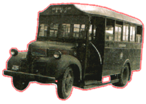

Dodge
- 1 1/2
Ton
 |
引擎 Engine 容積 Engine Capacity 波箱 Gearbox 車身 Body Build 體積 Volume 載客量 Passenger 服役年份 Year |
: Dodge 4cyl, Petrol : 不詳 : Manual (4-Speed) : CMB : 不詳 : 25 : 1946 - 19?? |
由於日本侵華時期，大部份巴士都被日軍所破壞，令到戰後巴士出現嚴重不足的情況，有見及此，此車便由英軍軍車，經重新改建車身而造成。